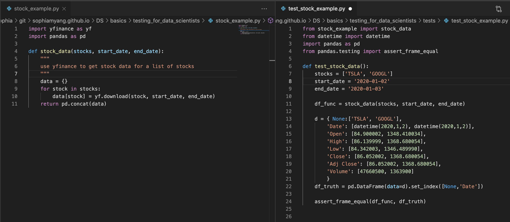
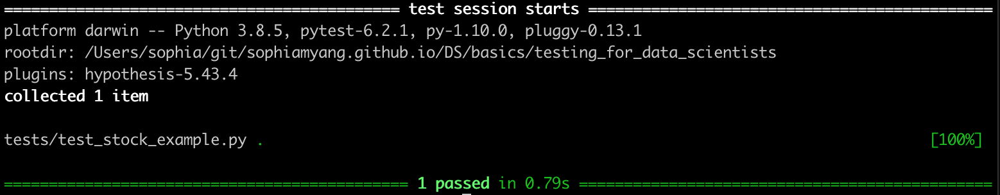
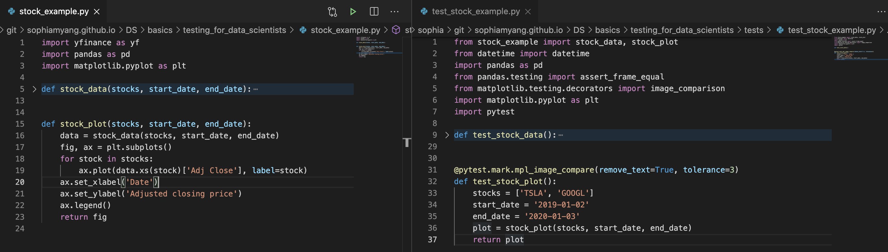
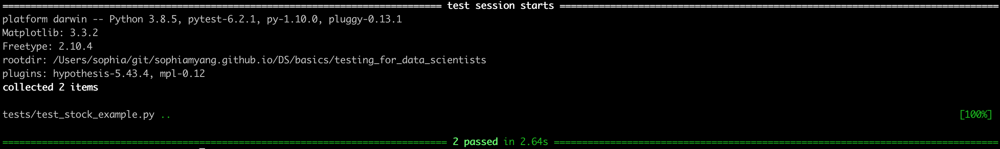

Testing for data scientists¶
Using pytest, ipytest, and hypothesis for unit testing
Software testing is essential for software development. It is recommended for software engineers to use test-driven development (TDD), which is a software development process that develops test cases first and then develops the software. For data scientists, it is not always easy and plausible to write tests first. Nevertheless, software testing is so important. Every data scientist should know how to do unit testing and use unit testing in their data science workflow. A lot of data scientists already use assertions, which is very important and a first step to test-driven development. This article will step up from assertations and focus on three tools – pytest, ipytest, and hypothesis. There are other testing tools available, such as the Python built-in library unittest. unittest has similar functionalities as pytest, but I think pytest is more user friendly for data scientists and includes more useful features.
Set up¶
To install pytest and hypothesis, run conda install pytest hypothesis -c defaults -c conda-forge.
To use pytest and hypothesis, we will need separate testing scripts. For simplicity, in our examples below, our main script for data accessing, processing, and modeling will be called stock_example.py. Our testing script will be called test_stock_example.py. In practice, data accessing, processing, and modeling are usually in separate files and there might be multiple testing files. It is recommended to save your test files under a tests directory.
.
⊢ stock_exmple.py
⊢ tests
⌙ test_stock_example.py
Test data accessing and the input data¶
Data Scientists may get data from everywhere, from internal sources, vendors, and different APIs. Our data pipeline and model depends on successfully getting the right data. If we fail to get the data or if the vendor changes the data schema or format, we want to be able to catch these issues in a testing script. For example, if we are interested in looking at the stock market data. We can use the yahoo finance API (pip install yfinance).
In stock_example.py, I wrote a function stock_data to get data from multiple stocks and return a pandas dataframe (see image below, left panel). To test this function, in the test_stock_example.py file (see image below, right panel), given two stocks and defined timeframe and when stock_data called, df_func is the dataframe we get from the function stock_data. df_truth is what we desire. Then df_func must be the same as the df_truth. assert_frame_equal is a good function to use when compare two dataframes.
If your testing case is large and you do not want to check if the two dataframes are the same, you can use assertions in the testing script to check for dataframe shape, duplicates, column names, missing values, and others (e.g., assert len(df_func) == 2).

Now if we run pytest or python -m pytest (if pytest does not add the current directory in the PYTHONPATH). Then
we can see we pass the test. The dataframe we got from the function is indeed the dataframe we expect to see. This simple test will tell us if we have trouble accessing data through the API or if the data format changes.

Test plots¶
Data scientists often produces visualization reports or dashboard and they may not want the visualization images to change by accident. pytest-mpl allows us to test if our images changes or not. First, we need to install pytest-mpl:
conda install pytest-mpl -c defaults -c conda-forge
Next, in our main file stock_example.py (see image below, left panel), we added a function stock_plot, which produces line plots for multiple stocks. In the testing file test_stock_example.py (see image below, right panel), we added a testing function test_stock_plot which calls and tests the stock_plot function. Note that we also added a decorator @pytest.mark.mpl_image_compare(remove_text=True) to indicate where we want to compare images.

Before we run pytest, we need to run the following to generate a baseline image for future images to compare with. Images will be saved under the tests/baseline directory.
python -m pytest -k test_stock_example --mpl-generate-path=tests/baseline
Then we run pytest and compare new images with the baseline image:
pytest --mpl

Test data processing¶
parameterize fixture hypothesis (regular expression)
test model accuracy
import yfinance as yf
import pandas as pd
import matplotlib.pyplot as plt
import scipy.optimize as spo
import math
import numpy as np
def get_data(tickers, start_date, end_date):
"""
use yfinance to get stock "Adj Close" data
"""
return yf.download(tickers, start=start_date, end=end_date)['Adj Close']
def stock_plot(price):
fig, ax = plt.subplots()
tickers = price.columns.to_list()
for ticker in tickers:
ax.plot(price[[ticker]], label=ticker)
ax.set_xlabel('Date')
ax.set_ylabel('Adjusted closing price')
ax.legend()
return fig
def calculate_daily_returns(allocation, price):
"""
Calculate daily return
allocation: allocation of the stocks in your portfolio
price: adj close price for the stocks
"""
start_val = 1 #how much money we have to start with
normed = price/price.iloc[0] #normalize prices
allocated = normed * allocation
position = allocated * start_val
portfolio = position.sum(axis=1)
daily_returns = (portfolio/portfolio.shift(1)) - 1
return daily_returns
def sharpe_ratio(allocation, price):
"""
Calculate negative sharpe ratio
allocation: allocation of the stocks in your portfolio
price: adj close price for the stocks
"""
daily_returns = calculate_daily_returns(allocation, price)
sharpe_ratio = (daily_returns.mean()/daily_returns.std()) * (-1)
return sharpe_ratio
def optimize_sharpe_ratio(price):
"""
optimizes sharpe ratio for best allocations
"""
tickers = price.columns.to_list()
allocation = np.ones(len(tickers))/len(tickers)
bounds = [(0.0, 1.0) for i in range(len(tickers))]
constraints = (
{ 'type': 'ineq', 'fun': lambda inputs: 1.0 - np.sum(inputs) },
{ 'type': 'ineq', 'fun': lambda inputs: np.sum(inputs)-1 })
result = spo.minimize(
sharpe_ratio, allocation, args=price, method='SLSQP',
options={'disp':True},bounds=bounds,constraints=constraints)
allocations = result.x
return allocations
---------------------------------------------------------------------------
ModuleNotFoundError Traceback (most recent call last)
<ipython-input-1-6412cdbb5e12> in <module>
----> 1 import yfinance as yf
2 import pandas as pd
3 import matplotlib.pyplot as plt
4 import scipy.optimize as spo
5 import math
ModuleNotFoundError: No module named 'yfinance'
from pandas.testing import assert_series_equal
tickers = ['AAPL','AMZN','MSFT','NVDA']
start_date = '2019-05-02'
end_date = '2020-01-03'
df = get_data(tickers, start_date, end_date)
print(df.columns)
optimize_sharpe_ratio(df)
[*********************100%***********************] 4 of 4 completed
Index(['AAPL', 'AMZN', 'MSFT', 'NVDA'], dtype='object')
Optimization terminated successfully (Exit mode 0)
Current function value: -0.15828298868569474
Iterations: 7
Function evaluations: 35
Gradient evaluations: 7
array([0.6408362, 0. , 0.3591638, 0. ])
from numpy.testing import assert_almost_equal, assert_array_almost_equal
assert_array_almost_equal(optimize_sharpe_ratio(df), [1,0,0])
Optimization terminated successfully (Exit mode 0)
Current function value: -0.16656066501485198
Iterations: 6
Function evaluations: 24
Gradient evaluations: 6
Test data processing pipeline¶
Test dataframes, shape, duplicates, NAs, formats, assumptions or statistical properties e.g., normality, outliers,